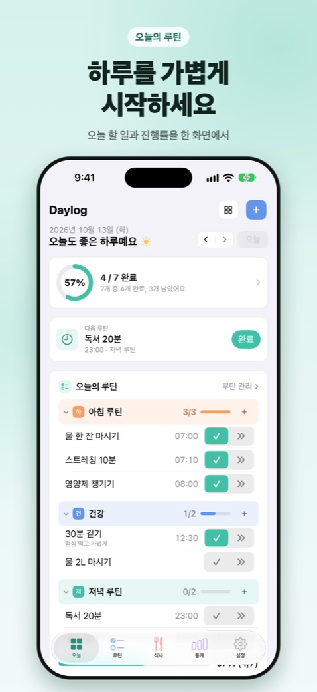
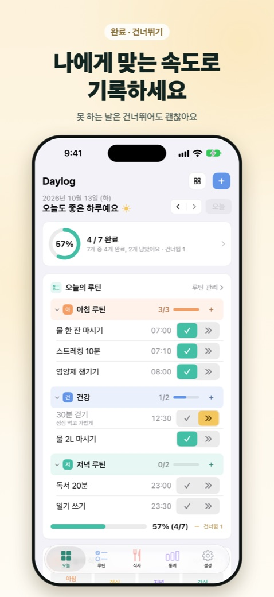
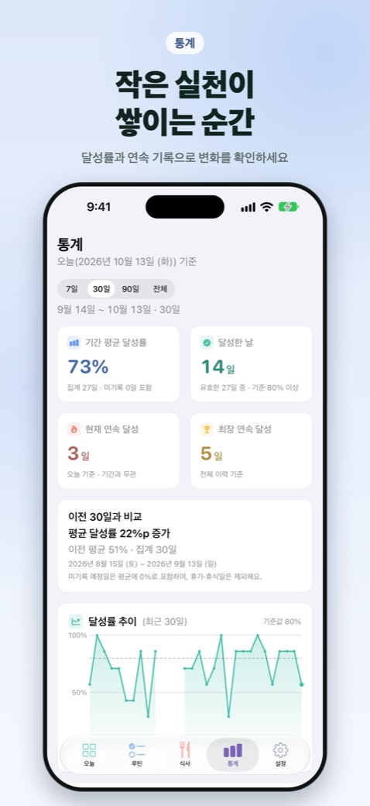
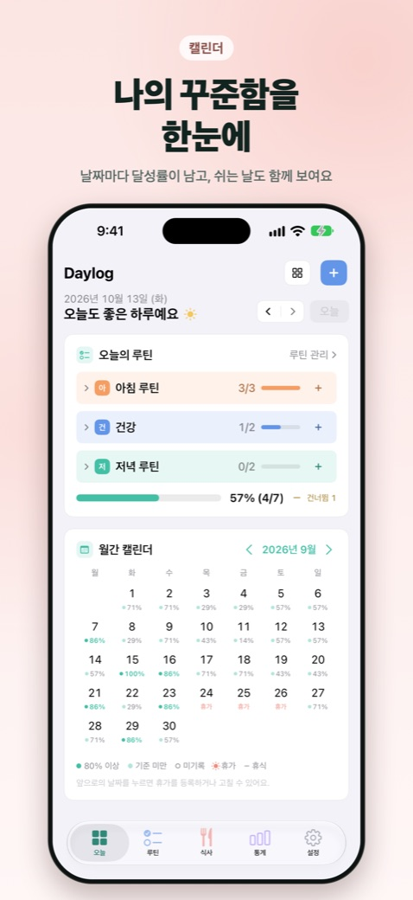
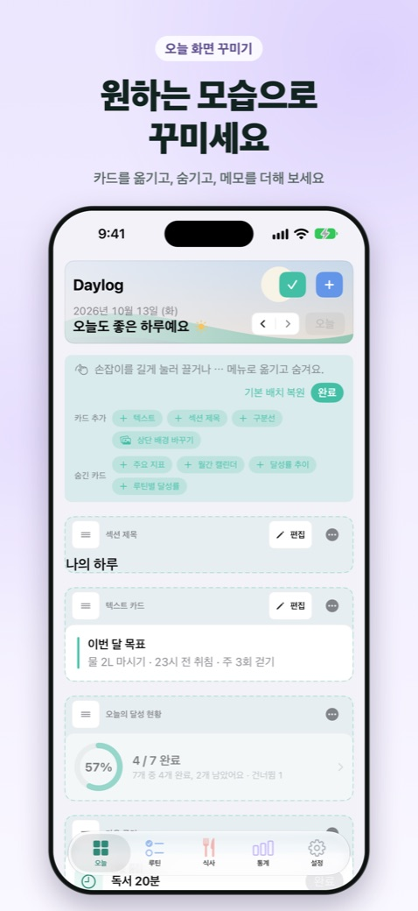
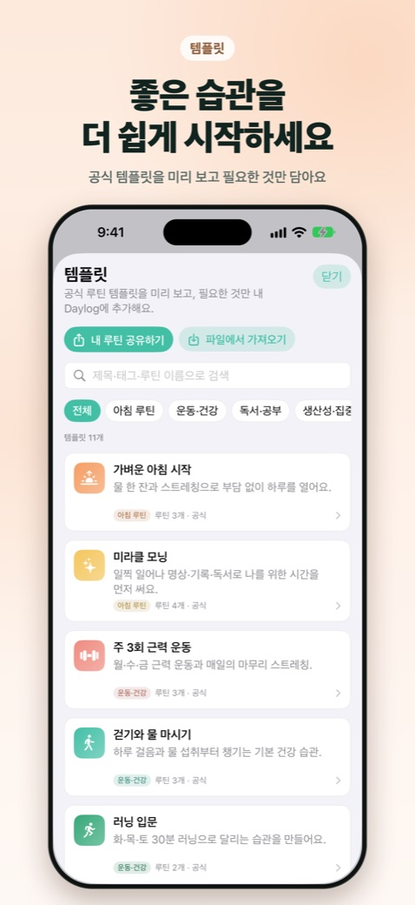
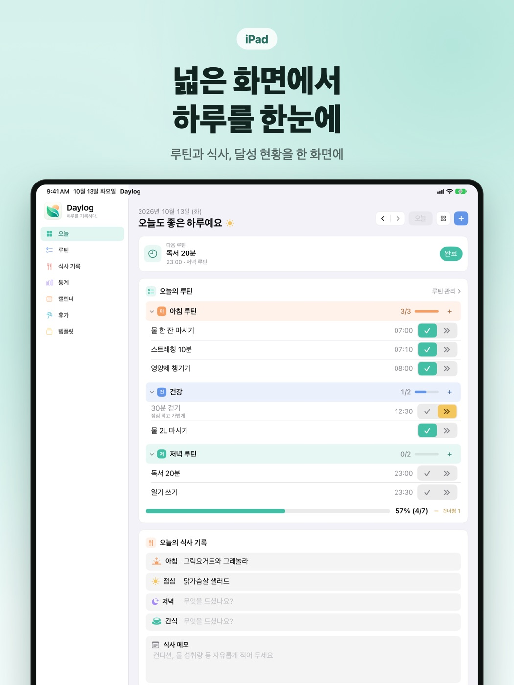
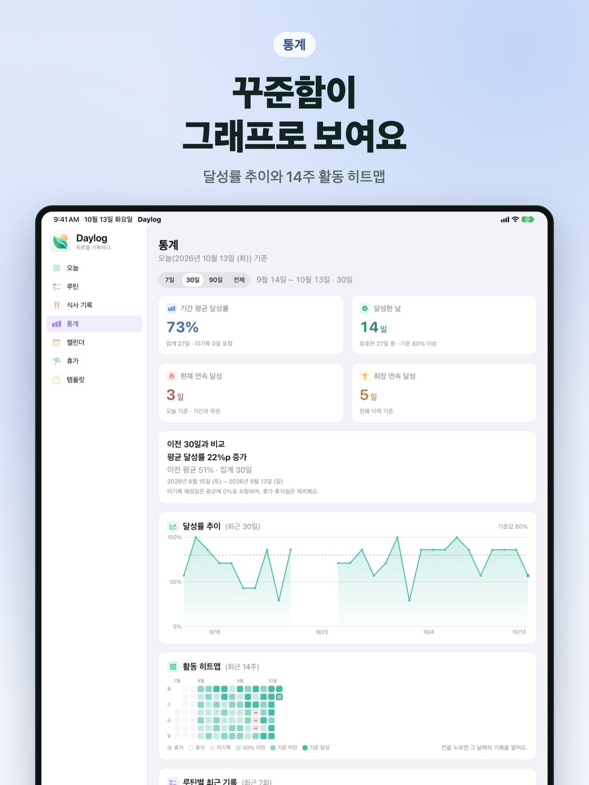

루틴과 하루를
가볍게 기록
복잡한 설정 없이 오늘 할 일을 체크하고, 쌓인 기록을 통계와 캘린더로 돌아보세요.
iPhone · iPadApp Store 출시 준비 중
MacGitHub에서 내려받기






하루를 기록하는 데 필요한 것만
체크 한 번이면 끝. 못 하는 날은 건너뛰어도 괜찮아요.
오늘의 루틴
그룹으로 나눈 루틴을 한 화면에서 확인합니다. 루틴마다 완료와 건너뛰기 단추가 있고, 요일·시간·메모를 정할 수 있습니다.
통계와 캘린더
평균 달성률, 달성한 날, 연속 달성 기록과 활동 히트맵을 보여 줍니다. 월간 캘린더에서 지난 기록을 확인하고 고칩니다.
휴가
쉬는 기간을 휴가로 등록하면 그 기간은 통계에서 빠집니다. 휴가 중에도 이어 갈 루틴만 골라 둘 수 있습니다.
식사 기록
아침·점심·저녁·간식을 간단히 적고 날짜별로 찾아봅니다. 쓰지 않으면 설정에서 끌 수 있습니다.
오늘 화면 꾸미기
카드 순서를 바꾸고 숨기고, 메모 카드와 섹션 제목을 더합니다. 상단에 배경 사진을 둘 수 있습니다.
템플릿
공식 루틴 템플릿을 미리 보고 필요한 것만 추가합니다. 내 루틴 구성은 파일로 만들어 주고받을 수 있습니다.
알림과 위젯
루틴 시간에 알림을 받고 알림에서 바로 완료합니다. 홈 화면 위젯으로 오늘의 진행 상황을 봅니다.
iCloud 동기화
iCloud를 켜 두면 같은 Apple 계정의 내 기기에서 같은 기록을 봅니다. 회원 가입도, 광고도, 추적도 없습니다.
iPad의 넓은 화면에서도
루틴과 식사, 달성 현황을 한 화면에 펼쳐 봅니다.


기록은 내 기기와 내 iCloud에만
Daylog는 개인정보를 수집하지 않습니다. 개발자가 운영하는 서버가 없고, 기록을 받거나 볼 수 없습니다.